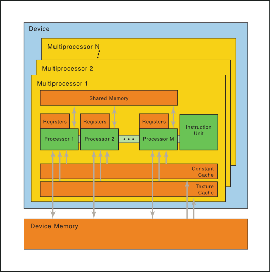
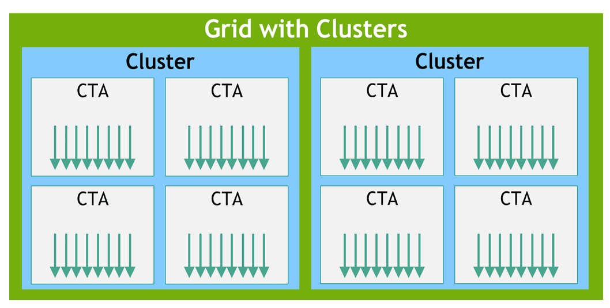

第 3 章 PTX 机器模型（PTX Machine Model）
NVIDIA PTX（Parallel Thread Execution，并行线程执行）是一套低层的虚拟机和指令集架构（ISA），把 GPU 暴露成一个数据并行（data-parallel）的计算设备。本章概述 PTX 背后的硬件抽象模型——即 PTX 程序最终被翻译、映射到哪种物理执行单元上。
本章目录
ptxas 在驱动安装期（install-time）翻译为目标 GPU 的原生指令（SASS）。
3.1 一组 SIMT 多处理器（A Set of SIMT Multiprocessors）
NVIDIA GPU 架构围绕一个可扩展的多线程 流式多处理器阵列（Streaming Multiprocessors，SMs）构建。当宿主（host）程序启动（invoke）一个 kernel 网格（grid）时，网格中的各个线程块（block）会被枚举并分发到那些尚有空闲执行能力的多处理器上。一个线程块内的所有线程会在同一个多处理器上并发执行；当某个线程块执行完毕，新的线程块就会被派发到腾出资源的多处理器上继续运行。
每个多处理器（即一个 SM）由以下部分构成：
- 多个 标量处理器核心（Scalar Processor，SP 核）——对应 CUDA 语境里的「CUDA Core」；
- 一个多线程指令单元（multithreaded instruction unit）；
- 以及片上共享内存（on-chip shared memory）。
多处理器在硬件层面创建、管理和执行并发线程，调度开销为零。它实现了单指令的屏障同步（barrier synchronization）。快速的屏障同步，加上轻量级的线程创建和零开销的线程调度，高效地支撑了极细粒度（fine-grained）的并行——例如，可以把问题按「一个线程负责一个数据元素」这样很低的粒度来切分（如图像中的一个像素、体数据中的一个体素 voxel、网格计算中的一个单元）。
为了管理同时运行、甚至可能执行多份不同程序的成百上千个线程，多处理器采用了一种被称为 SIMT（单指令多线程，single-instruction, multiple-thread） 的架构。多处理器把每个线程映射到一个标量处理器核心，每个标量线程都拥有自己独立的指令地址和寄存器状态，彼此独立执行。多处理器的 SIMT 单元以「线程组」的方式创建、管理、调度并执行线程，这种线程组叫做 warp（线程束/经线）。（这个术语源自纺织 weaving，是人类最早的并行线程技术。）组成某个 SIMT warp 的各个线程从同一程序地址同时起步，但除此之外可以自由地分支（branch）并独立执行。
WARP_SZ 获取）。它是 GPU 硬件调度和执行的最小单位。一个线程块被拆分成 warp 的方式是固定的：每个 warp 包含线程 ID 连续递增的一组线程，第一个 warp 包含 thread 0。
当多处理器拿到一个或多个待执行的线程块时，会将其拆分为由 SIMT 单元调度的 warp。一个块被拆成 warp 的方式永远一致：每个 warp 包含线程 ID 连续、递增的线程，第一个 warp 包含 thread 0。
在每一个指令发射（issue）时刻，SIMT 单元会挑选一个已就绪（ready）的 warp，并向该 warp 的活跃线程（active threads）发射下一条指令。一个 warp 一次只执行一条公共指令（common instruction），因此当 warp 内所有线程的执行路径一致时，才能达到满效率。如果 warp 内的线程因为「数据相关的条件分支（data-dependent conditional branch）」而发散（diverge），那么该 warp 会串行地依次执行每条被走到的分支路径，并在执行某条路径时禁用（disable）不在该路径上的线程；当所有路径都执行完毕后，线程才重新汇聚（converge）回同一条执行路径。分支发散只发生在 warp 内部；不同的 warp 彼此独立执行，无论它们跑的是相同还是互不相交的代码路径。
SIMT 架构与 SIMD（单指令多数据，Single Instruction Multiple Data） 向量组织相似，都是用单条指令控制多个处理单元。一个关键区别在于：SIMD 向量组织会把「向量宽度」暴露给软件，而 SIMT 指令只描述单个线程的执行与分支行为。与 SIMD 向量机不同，SIMT 让程序员既能为独立标量线程写线程级并行代码，也能为协作线程写数据并行代码。从正确性角度，程序员基本可以忽略 SIMT 行为；但只要代码很少需要 warp 内线程发散，就能获得可观的性能提升。而在向量架构里，软件必须手动把访存合并（coalesce）成向量并手动管理发散。
一个多处理器一次能处理多少个线程块，取决于每个线程需要多少寄存器、每个块需要多少共享内存——因为多处理器的寄存器和共享内存要在「这批块的所有线程」之间分摊。如果某个多处理器上连至少一个块所需的寄存器或共享内存都不够，该 kernel 就会启动失败（fail to launch）。

一组带有片上共享内存的 SIMT 多处理器。
附：线程层次与内存层次（Machine Model 上下文）
下面两张图虽出自第 2 章「编程模型」，但正是 PTX 机器模型所抽象的线程/内存结构，故一并附上以便理解。



3.2 独立线程调度（Independent Thread Scheduling）
在 Volta 架构之前，一个 warp 使用所有 32 个线程共享的单一程序计数器（program counter），外加一个「活跃掩码（active mask）」来标记哪些线程是活跃的。结果就是：处于发散区域或不同执行状态的同一 warp 内线程，无法互相发信号或交换数据；而那些用锁（lock）或互斥量（mutex）保护、需要细粒度数据共享的算法，很容易因为竞争线程来自哪个 warp 而陷入死锁（deadlock）。
从 Volta 架构（compute capability 7.0，sm_70）开始，独立线程调度（Independent Thread Scheduling）让线程之间不受 warp 限制地实现完全并发。在独立线程调度下，GPU 为每个线程维护独立的执行状态（包括程序计数器和调用栈 call stack），并能以单线程粒度让出（yield）执行——无论是为了更好地利用执行资源，还是为了让某个线程等待另一个线程产出的数据。一个调度优化器（schedule optimizer）决定如何把同一 warp 里的活跃线程重新组合进 SIMT 单元。这既保留了与以往 NVIDIA GPU 相同的 SIMT 高吞吐特性，又带来了更大灵活性：线程现在可以以「亚 warp（sub-warp）粒度」发散并重新汇聚。
如果开发者曾对早期硬件架构的「warp 同步性（warp-synchronicity）」做过假设，独立线程调度可能导致实际参与执行代码的线程集合与预期大不相同。尤其要注意：任何「warp 同步式代码」（例如无显式同步的 warp 内归约 intra-warp reduction）都应重新审视，以确保与 Volta 及之后架构兼容。详见《CUDA 编程指南》中「Compute Capability 7.x」一节。
3.3 片上共享内存（On-chip Shared Memory）
如图 4（硬件模型）所示，每个多处理器拥有以下四类片上内存：
- 每个处理器一组本地的 32 位 寄存器（registers）；
- 一个并行数据缓存 / 共享内存（shared memory），由所有标量处理器核心共享，共享内存状态空间（shared memory space）就驻留于此；
- 一个只读的 常量缓存（constant cache），由所有标量处理器核心共享，用于加速对常量内存空间（constant memory space，设备内存中的只读区域）的读取；
- 一个只读的 纹理缓存（texture cache），由所有标量处理器核心共享，用于加速对纹理内存空间（texture memory space，设备内存中的只读区域）的读取；每个多处理器通过一个纹理单元（texture unit）访问纹理缓存，该单元实现了各种寻址模式和数据过滤（filtering）。
local 与 global 内存空间都是设备内存（device memory）中的可读写区域。
翻译来源：NVIDIA PTX ISA Version 9.3 官方文档第 3 章《PTX Machine Model》。本页为 AI 对照原文、结合 CUDA 背景的改写式中文翻译，仅供参考，请以官方英文原文为准。